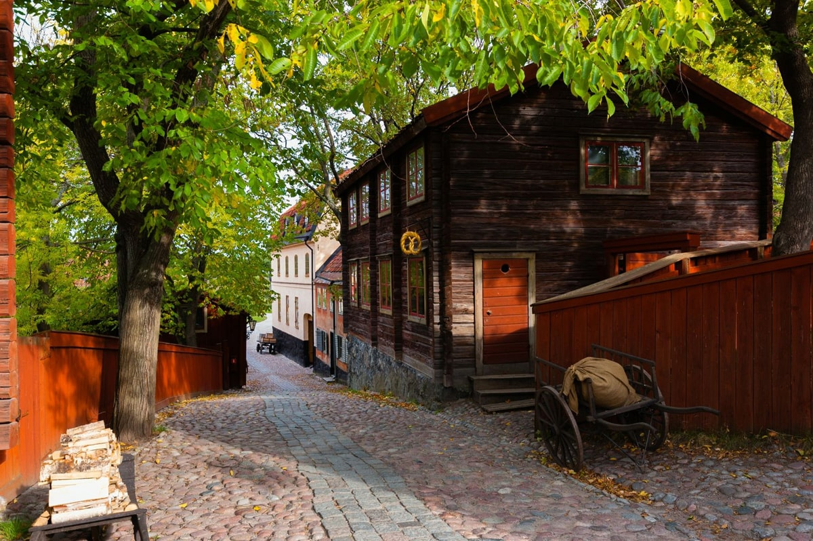

У місті розташовані основні державні органи:
1. ПРОГУЛЯНКА КОРОЛІВСЬКИМИ КАНАЛАМИ
Стокгольм фактично лежить на воді. І звичайно, один з найкращих способів почати знайомство з містом - здійснити екскурсію на човні по каналу, оглядаючи основні визначні пам'ятки міста. Маршрут прогулянкового туру проходить через мальовничий канал Юргорден, уздовж берегів Сальтшен і повз історичні будівлі та пам'ятки. Як правило, на всіх прогулянкових судах є аудіо гіди різними мовами.
2. МУЗЕЙ ABBA
Для меломанів і шанувальників культового гурту це, безумовно, визначна пам'ятка номер один в Стокгольмі. Втім, в цьому інтерактивному музеї буде цікаво і весело абсолютно всім: тут можна віртуально приміряти костюми ABBA, співати, грати, змішувати оригінальну музику за пультом і стати п'ятим учасником ABBA, виступаючи на великій сцені разом з Бьйoрном, Бені, Фрідою і Агнетою.
Квиток включає в себе також відвідування Залу слави шведської музики, який знаходиться в цьому ж будинку. Тут представлено понад 400 популярних шведських музикантів з 1920-х років і по сьогоднішній день.
Адреса: Djurgårdsvägen 68, 115 21 Stockholm
3. МУЗЕЙ ВАЗА
У цьому музеї на західному березі Юргордена була відроджена дивовижна реліквія часів царювання короля Густава Адольфа (17 століття).
Військовий корабель Vasa, оснащений 64 гарматами, був найпотужнішим військовим кораблем свого часу. 1628 року судно вийшло в своє перше плавання. Однак щось пішло не так, і менш ніж за 30 хвилин «Ваза» затонув недалеко від гавані Стокгольма. Корабель разом з усім спорядженням залишався на глибині до 1961 року, коли він був піднятий на поверхню і почалося його повільне і кропітке відродження. Реставраторам вдалося зберегти майже всі оригінальні частини і відновити судно в найдрібніших деталях. «Ваза» - це єдиний відреставрований корабель 17-го століття такого масштабу, що дійшов до наших днів. Разом з кораблем підняли безліч артефактів, які представлені в десяти виставкових залах музею.
У вартість квитка входить багатомовний аудіо гід і перегляд фільму про корабель «Ваза», доступний також кількома мовами.
Адреса:Galärvarvsvägen 14, 115 21 Stockholm, Швеція
4. КОРОЛІВСЬКИЙ ПАЛАЦ
Королівський палац у Стокгольмібудучи офіційною резиденцією Його Величності Короля, а також місцем проведення більшості офіційних прийомів монархії, доступний для публіки круглий рік. Це поєднання королівської резиденції, робочого місця і культурно-історичної пам'ятки, постійно відкритої для відвідувачів, робить Королівський палац Стокгольма унікальним серед королівських резиденцій Європи.
Палац побудований в стилі бароко за проектом архітектора Никодима Тессина і являє собою римський палац. У палаці багато цікавого. На додаток до Королівських апартаментів є три музеї з багатою історією: скарбниця з регаліями, музей Tre Kronor, який представляє середньовічну історію палаців, і музей старожитностей Густава III. У літні місяці також відкриті Королівська каплиця і церква Ріддархольмен - королівська похоронна церква в п'яти хвилинах ходьби від палацу.
Адреса:Slottsbacken 1, 111 30 Stockholm, Швеція
5. МУЗЕЙ ПІД ВІДКРИТИМ НЕБОМ СКАНСЕН

Музей Скансен відомий як найстаріший у світі етнографічний музей під відкритим небом і, безумовно, це одна з кращих пам'яток Стокгольма, яка немов переносить гостей у минуле і знайомить їх з побутом людей різного походження, які жили в різний час і в різних частинах країни.Експозиція музею представляє історичну Швецію в мініатюрі. Більше 150 будівель - будинки, церкви, школи, магазини і майстерні - були доставлені сюди з усієї країни.В гончарній майстерні і майстерні склодува можна побачити весь процес роботи майстрів і помилуватися на готові вироби зі скла та глини.А своїх юних відвідувачів Скансен порадує невеликим зоопарком з місцевими тваринами, такими як ведмеді, вовки і тюлені, які утримуються тут в умовах ідентичних їх природному середовищу.
Адреса:Djurgårdsslätten 49-51, 115 21 Stockholm